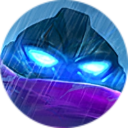

阿特拉斯 Atlas
背景故事
海洋角斗士 黑暗、寒冷而神秘的深海，是黎明大陆（Land of Dawn）上最后一片未被探索的疆域。从海面一路向下，阳光逐渐消退，温度不断下降，最终陷入彻底的黑暗。这里被称为深渊之海（Abysmal Sea），其中的暗流与高压足以撕裂艾若迪提欧（Eruditio）发明的任何先进材料。这是一片生命的禁区，从未有人类涉足。只有那些被遗弃、被淘汰的文明遗迹，在此不断下沉、堆积。 然而，这里并非只有死亡。包括阿特拉斯（Atlas）在内的许多难以置信、无法形容的生物，已在这片危险之地挣扎繁衍了无数岁月。它们是黎明大陆上最古老的生命之一，以吞噬元素生物来获取力量，也正因如此，它们被远古者（Ancient Ones）囚禁在这最深之处。强大的禁制（Injunction）阻挡了光线、热量，也阻断了它们向上的通路。为了适应高压环境，它们褪去了甲壳与多余的结构，演化出各种流体般的形态。在无尽的黑暗中，没有争斗与冲突，只有生存的法则：存在、更替与循环。 然而，岁月流转，某些事物逐渐发生了改变。这些变化并非源自海洋之下，而是来自上方。文明的更迭与连绵的战争，不仅影响了陆地，也波及海洋。一切开始恶化。深渊之海中的生物再也无法适应愈发恶劣的处境。枯萎与死亡毫无征兆地降临。体型最大的那些生物率先奋起抗争。这些巨大的纤维生物扭动着触须与身躯向上冲去，却因禁制而被撕成碎片。 其余的生物无法理解自己的命运，但它们知道需要改变——这是所有生灵的本能。于是，它们开始思考对策。它们尝试打破禁制。最终挣脱深渊之海的囚徒，唯有阿特拉斯。作为经验最丰富的个体，当深渊之海发生变故时，他比任何同类都更早感知到变化。他最先做好了逃离的准备。 那些被撕裂的肉体警示了其余生物：它们的身躯在压倒性的力量面前不堪一击。要打破禁制，他必须重新获得坚硬的甲壳。阿特拉斯在深海之中不断游荡、搜寻。直到一天，在一堆文明遗迹之中，他找到了命中注定的甲壳——机械哨兵（Mecha Sentry），一套庞大的远古机械装甲。这些巨物曾是统治北境山谷（Northern Vale）的冰岛石巨人（Iceland Golems）制造的战争机器。远古石巨人灭亡后，它们被后来的文明所遗弃，抛入海洋，被世界彻底遗忘。 阿特拉斯缓缓靠近机械哨兵，发现它因缺失控制核心而如一块僵硬废铁般沉睡在海底。他随即进入机械中心，伸展开触须，注入各个关节，开始接管控制。伴随着隆隆轰鸣，沉睡千年的机械哨兵再次点亮了双眼。被遗忘的躯壳与被遗弃的灵魂，完美地结合、融为一体。 巨大的机械哨兵冲破禁制，从深海直冲海面，跃出海面之上。世界迎来新成员的时刻到了——阿特拉斯，钢铁海妖（Ironclad Kraken）。 阿特拉斯对这个世界感到陌生而好奇。他怀着求知的渴望与变强的欲望，造访海水所能抵达的每一处。他如饥似渴地从各种生物、种族与文明中汲取知识。与此同时，他对机械哨兵的掌控也越发娴熟。仿佛这台机器本就是为他而造。但无论时光如何流逝，阿特拉斯的脑海中总萦绕着一个念头——他的同族仍在深渊之海中挣扎，那是世界上最深的囚笼、最遥远的绝境。 如今，阿特拉斯不仅拥有坚硬的装甲，更有了计划。他要打破深渊之海与世界之间的禁制，将同族从永恒的囚禁中解救出来。北境山谷的海域中，藏着一件只有海盗才相信的秘宝。它拥有再生的力量，足以改变整片海洋的生态环境。从第一次听闻这个故事起，阿特拉斯便想要得到它。